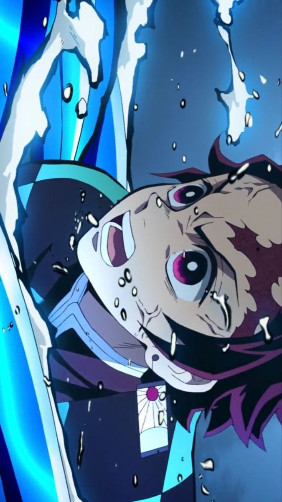

Vai trò: Kiếm Sĩ
Kỹ năng: Hơi Thở Nước, Hơi Thở Mặt Trời
Mô tả: Tanjiro là nhân vật chính của bộ truyện, có khứu giác siêu việt và lòng nhân hậu. Anh gia nhập Đội Diệt Quỷ để tìm cách chữa trị cho em gái mình và trả thù cho gia đình.
Quay Lại